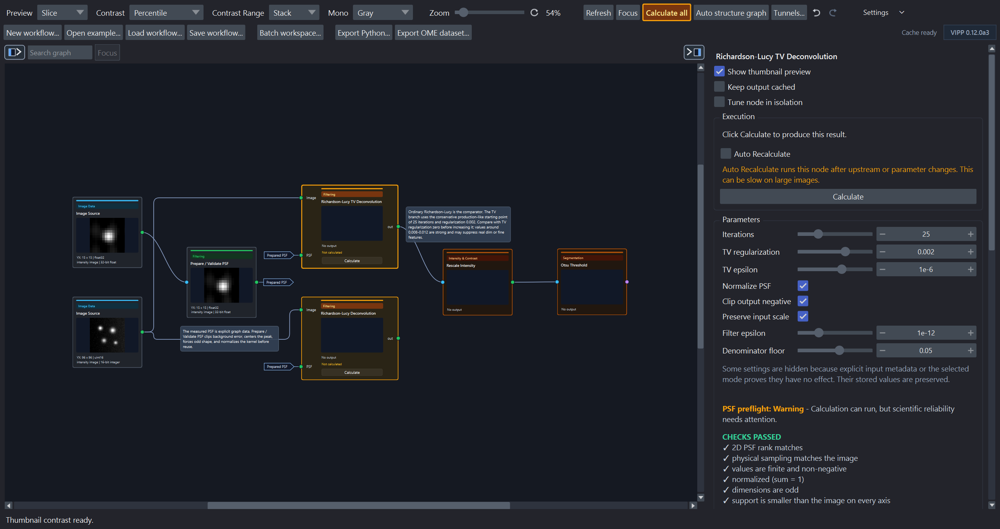

Toolbar and settings¶
Labels below match napari-vipp 0.13.0a4. Controls can collapse into Settings when the window is narrow.
Workflow tabs¶
The movable tab bar holds independent live workflow sessions. Each tab retains its graph, calculated results, ancillary caches, undo/redo history, inspector state, file path, dirty baseline, display choices, compute request, and Batch workspace. New workflow… and Load workflow… create sessions rather than discarding another open graph. Tabs can be renamed, reordered, and closed with Save/Discard/Cancel handling.
Switching tabs restores retained state and does not recalculate scientific results. The selected tab is acknowledged immediately and can show an indeterminate restoration state while its retained graph, inspector, thumbnails, and caches are reattached; this is not a processing run. A collection batch remains owned by its originating tab; VIPP blocks closing that origin, launching a second batch, or closing the application until the active run finishes or cooperatively cancels.
Workflow toolbar¶
| Control | Effect |
|---|---|
| New workflow… | Create a new tab containing one unbound Image Source on an otherwise empty graph. |
| Open example… | Open one of 13 bundled templates; ordinary examples configure sample sources, while the batch example creates a safe working copy on request. |
| Load workflow… | Open an external or previously saved workflow JSON. A valid attached batch configuration restores and opens Batch workspace without running a preview. |
| Save workflow… | Save the active tab's graph structure, parameters, layout, portable compute request, and selected UI/display profiles—not computed arrays. When a Batch workspace is active, choose whether to attach its versioned configuration to the same workflow JSON. |
| Batch workspace… | Open or return to the retained local-collection setup, optional representative preview, run progress, final status, and provenance view. This is the sole Batch workspace entry and is visually separated between workflow loading and the export actions. |
| Leave batch mode | When a retained representative session exists, discard its transient collection source overrides and return that workflow tab to ordinary single-image mode. It is unavailable during an active batch run. |
| Export Python… | Generate a headless script using supported operation and I/O calls. |
| Export OME dataset… | Save one reference image with associated graph label outputs. |
| Tunnels… | Manage named graph outputs and subscribers. |
| Auto structure graph | Apply a one-shot source-to-sink layout; undo restores positions. |
| Focus | Recover the graph center without changing zoom, selection, layout, cache state, or undo history. |
| Refresh | Re-evaluate ordinary automatic graph state. |
| Calculate all | Calculate manual nodes that are not current. During isolated tuning, first apply the tuned result and release the temporary downstream boundary. |
| Undo / Redo | Reverse or restore supported workflow edits. |
Image Source cards display the live layer, sample, file, or collection binding in an elided subtitle and retain the complete value in a tooltip. A compatible node dropped onto an existing wire can split that connection in place. Named output tunnels can be rerouted by dragging their source badge to another compatible output; preview/commit share type, cycle, and topology validation, and the accepted edit is atomic and undoable.
Compute controls¶
| Control | Effect |
|---|---|
| Auto / CPU / Prefer GPU / Custom | Auto is the learning default and appears first. CPU forces authoritative host implementations. Prefer GPU uses every reviewed eligible public GPU candidate without requiring a CPU-speed win. Custom exposes authored per-node CPU/GPU choices and benchmarking. |
| Actual-run compute summary | After an accepted run, summarizes the CPU/GPU mix or fallback state; hover for why the run made those decisions. |
| Find fastest pipeline… | In Custom mode, benchmark scientifically eligible implementations for unlocked nodes, validate a proposed whole-pipeline assignment, and present it for review before applying. |
| Fail if a selected GPU cannot run | Return an error when an explicitly selected GPU implementation is unavailable or ineligible for the exact call/memory plan instead of using a fallback-safe visible CPU decision. A non-fallback-safe rejection fails under either policy. |
| Compute setup and memory… | Verify the optional GPU stack, show typed eligibility/repair guidance, and inspect host RAM plus discrete VRAM or unified memory where supported. |
New sessions default to Auto. A schema-3 workflow loads as CPU because the old file did not author compute intent. With no exact compatible history, Auto uses reviewed GPU defaults. Accelerated-only history makes the next global Auto run measure CPU once on the same execution surface. Once both observations exist, a later matching run uses acceleration only if it clears the reviewed 1.20x/20-ms gate; otherwise it uses CPU. Only successful, fallback-free completed full-pipeline wall times are retained. Interactive, batch, and registry-lifecycle timing surfaces are never mixed, and Auto never silently benchmarks multiple implementations. Use Prefer GPU for global accelerator placement without a speed requirement or a reviewed Custom provider/Find fastest proposal for per-node control.
Prefer GPU bypasses only Auto's CPU-versus-GPU performance gate. Scientific, dtype, parameter, dependency, environment, and memory admission remain active, and unsupported nodes receive an explained ordinary CPU decision. Prefer GPU requires visible fallback. If every eligible GPU has complete comparable timing evidence, VIPP chooses the fastest GPU; otherwise stable implementation-ID order provides a deterministic choice without making a speed claim. Per-node preferences and both benchmark actions are inactive until Custom is restored.
Entering Custom while idle preserves the last valid output and its actual provenance. If it does not satisfy saved Custom choices, its muted badges and summary say that it is a previous result rather than relabeling it. Compute mode, fallback, per-node preference, and optimizer-lock controls are disabled during calculation or benchmarking. They unlock after normal completion; to change policy sooner, use the explicit cancellation action and wait for resource cleanup.
In Custom mode, an operation with a declared provider shows Auto for this node, CPU, and one GPU · library entry for each declared library. Auto for this node authors no backend pin and uses the reviewed Auto default for that node. It does not consume raw benchmark records or Auto's completed-run history, which is consulted only when the global mode is Auto. The choice remains visible even when the current call or environment will later be rejected, fall back, or fail; execution admission is call-specific. Best GPU appears only when several libraries genuinely compete. Exact implementation pins are an advanced persistence/API feature; a loaded pin remains visible until deliberately replaced. A separate optimizer lock—not merely choosing a backend—preserves a node during Find fastest.
Calculated cards show compact CPU, GPU · CuPy, GPU · cuCIM, or amber CPU fallback badges. A muted badge belongs to the last accepted run while a new result is pending or current Custom intent differs. Hover or inspect the node for the implementation ID and version, runtime/device, preference, decision reason, benchmark evidence, memory estimate, and fallback details.
Node benchmarking and whole-pipeline optimization use the exact current inputs and require scientific parity before timing alternatives. CPU timing uses paired warm medians; GPU timing distinguishes resident compute from transfers modeled across the complete pipeline. The optimizer reports overall and current-operation progress. A monolithic library call can remain at one percentage until it returns; a reached time limit means comparisons remain, not that the current graph was proved optimal. Completed exact benchmark records are reused on retry.
For the practical sequence, first-release GPU-region summary, dtype caveats, and platform/install boundary, see choose and verify CPU or GPU compute.
Feedback surfaces¶
VIPP uses one severity-aware message strip for workflow, graph, source, compute, and batch feedback. Routine information and warnings remain lightweight; only an actionable error uses a filled, full-width alert. A message is not the execution record: the toolbar actual-run summary and per-node badges carry the compact compute result, while the detailed execution/provenance view explains implementation and fallback decisions.
Napari's status bar at the bottom of the viewer is separate. It belongs to the viewer and reports coordinates, values, and layer interaction; VIPP does not duplicate that purpose in its message strip.
Display settings¶
| Setting | Choices / meaning |
|---|---|
| Preview mode | Slice, MIP, or Off for graph/inspector previews. |
| Thumbnail detail | Low (90 × 55), Standard (180 × 110), High (360 × 220), or Very High (720 × 440) backing detail. The card keeps the same on-screen size; High and Very High can improve HiDPI display, downsampling, or maximum graph zoom. |
| Thumbnail contrast | Controls thumbnail contrast behavior; it does not alter processed data. |
| Contrast range | Stack caches one exact full-output, resolution-independent range; Slice normalizes the selected detail's spatially sampled current view and avoids a full-output scan. |
| Thumbnail statistics | Auto, CPU, or Prefer GPU for presentation-only Stack contrast work. |
| Monochrome colormap | Changes display of monochrome previews only. |
| Link napari/VIPP sliders | Synchronizes napari dimensions and VIPP preview sliders. |
| Save thumbnail visibility in workflows | Includes per-node thumbnail visibility in workflow UI state. |
| Port labels | Ambiguous only (default) labels multi-input or multi-output nodes, Show all labels every port, and Hide all removes persistent labels. |
| Graph zoom | Scales graph cards; reset returns to 100%. |
Thumbnail detail and thumbnail statistics are independent. Low/Standard/High/Very High changes only the retained source image for the fixed card viewport; it neither recalculates a node nor changes the complete output population used by Stack contrast. High and Very High do not guarantee more physical on-screen pixels; Very High retains four times the backing pixels of High. Changing detail retains cached exact Stack limits, but may slightly change Slice limits because Slice normalizes the selected resolution's spatial sample. The choices are local presentation settings, not workflow parameters or scientific provenance.
For Stack Percentile contrast, native uint8 and uint16 results use an exact
dtype-aware histogram. CPU and CuPy produce the same display limits, including
the NumPy-linear 0.5th/99.9th-percentile result. Min-max uses an exact native CPU
reduction rather than constructing a histogram. Float and other-dtype
percentiles use the exact NumPy-compatible CPU path in this release. Raw integer
contrast, masks, labels, tables, and other scan-free previews do not launch an
unnecessary statistics scan.
Presentation Auto decides per eligible Percentile result from the full
output's dtype and byte size, not its backing thumbnail resolution. Before the
first successful thumbnail GPU calculation, it uses a conservative 384-MiB
crossover for uint8 and 512 MiB for uint16; both become 32 MiB while that
path is warm. These measured default heuristics are not a universal fastest
guarantee because data distribution, hardware, CUDA startup, residency, and
competing work can move the crossover. Presentation CPU never initializes
CUDA. Presentation Prefer GPU is the explicit override: it attempts every
eligible CuPy histogram and visibly falls back to CPU when safe.
Very small batches that are guaranteed to remain on CPU complete immediately without occupying the toolbar progress strip: at most 1 MiB total, eight requests, and eight aggregate scalar/channel lanes. Larger work, high-channel data, and selected GPU paths stay in the cancellable background worker. This is an internal scheduling boundary, not a different contrast algorithm or a CPU/GPU speed claim; the selected-node contrast status records the result in the same way.
The main compute policy is authoritative: main CPU hard-forces presentation CPU; main Prefer GPU biases presentation Auto toward GPU; main Auto and Custom leave it adaptive. Selecting a node reveals a compact Thumbnail contrast row near the top of its inspector: Calculating…, CPU · NumPy, GPU · CuPy, amber CPU fallback, or red Error. Ordinary success is muted, and the graph card stays compact. This never replaces the card's scientific CPU, GPU · CuPy, GPU · cuCIM, or CPU fallback badge. Hover the inspector row or thumbnail for scope, render detail, algorithm, byte count, elapsed time, selection reason, threshold, fallback, and failure information; keyboard What's This help and screen readers receive the same text.
The shared toolbar reports the active node, backend, and statistics phase. CPU
integer histogram and min-max paths advance and cancel between bounded chunks.
An active GPU kernel/synchronization or exact float/other-dtype NumPy percentile
may contain a non-interruptible inner call; that phase is identified and
Cancel takes effect at the next cooperative boundary. No partial contrast
limit is published.
Long port names are shortened on the card and retain their full text in a tooltip. Changing the label mode can make an already tightly packed layout overlap; VIPP reports the number of overlapping card pairs in its message strip. Use Auto structure graph to make label-aware space, or move the affected cards manually. Label visibility is a graph-display choice and never changes connections or processed data.
Execution and memory settings¶
| Setting | Meaning |
|---|---|
| Run all in BG | Checked: dispatch every graph recompute to background processing. Unchecked: use adaptive execution, keeping small ordinary work immediate while backgrounding known expensive operations and large inputs. |
| Cache mode | Keep all outputs, use Smart interactive cache, or use Low-memory mode. |
| Auto memory guard | Switches away from keep-all and prunes optional outputs if the configured cache share is exceeded. |
| Cache limit | Share of free-or-reclaimable memory used by the keep-all cache before the guard acts. |
| Keep output cached | Per-node request to retain an important result in Smart/Low-memory modes. |
| Auto Recalculate | Re-runs a selected manual node when upstream state changes; use cautiously for expensive work. |
Host cache status reports RAM; on Windows it separately shows remaining system commit because either physical or commit headroom can limit an allocation. Compute setup and memory… adds accelerator memory: discrete NVIDIA devices report separate VRAM, while a future unified- memory provider must report the shared budget rather than double-counting it. The executor applies an operation-specific conservative memory estimate before device work; the estimate and any typed OOM/fallback are part of execution provenance.
Cancel calculation prevents queued reruns and rejects the active result. It asks cooperative work to stop, but cannot forcibly interrupt every NumPy, SciPy, or scikit-image, CuPy, or cuCIM call already executing. GPU progress advances only after synchronization at a truthful operation checkpoint, and cancellation waits for cleanup before compute controls unlock. Failed/OOM attempts never replace prior processing results with uncomputed or provenance-unknown values. A verified source boundary may be accepted. If cleanup itself failed, a completed processing node may additionally be accepted, but only with matching actual-implementation provenance; all other nodes retain their coherent outputs, thumbnails, and badges.
If cleanup fails after calculation, node benchmarking, Find fastest, or a collection batch, VIPP requests cancellation of other active compute and every compute entry point, policy control, and policy-changing undo/redo action is disabled for that process. The actionable message asks for a restart because an ordinary CPU fallback cannot establish that an incompletely cleaned accelerator runtime is safe.
The current adaptive large-input boundary is 4,000,000 elements or 32 MiB, whichever is reached first. This applies even when Run all in BG is unchecked. Exact threshold diagnostics, Auto Contrast, colocalization density, and generated-layer contrast calculations also leave the user-interface thread when their inputs are large.
Stack thumbnail statistics use the same shared toolbar progress and cancellation surface. Progress names the node, backend, and active statistics phase. CPU integer histogram and min-max work stops at bounded chunk boundaries. An active GPU kernel/synchronization or exact float/other-dtype NumPy percentile inner call may be indeterminate and non-interruptible; Cancel takes effect at the next cooperative boundary. VIPP keeps provisional thumbnails and does not publish a partial contrast limit. Completed exact limits remain cached after an ordinary successful run or safe fallback. Accelerator cleanup failure instead enters the same process-wide compute quarantine as scientific GPU cleanup failure.
Background execution changes where work runs, not the method or the values it uses. Exact operations still inspect the complete required population. They may consume CPU time and memory while napari remains responsive.
Tune one node in isolation¶
Tune node in isolation is available in the selected-node inspector and the node context menu. The selected node must have a coherent cached result, and no dirty edit, pipeline calculation, source load, or batch run can be pending or in flight. Downstream nodes do not all need to have outputs.
While the session is active, parameter edits recalculate the selected node but pause propagation beyond it. The tuned node is the bright-amber actionable frontier. Its downstream closure is darker amber and labelled as waiting; those cards keep their last coherent results when they have them and otherwise remain unavailable. Neither case may be interpreted as a result of the new parameter values.
- Apply and continue keeps the latest parameters and local result, releases the boundary, and resumes calculation from the node's direct descendants.
- Cancel tuning restores the parameters, output, and execution state that were current when the session began without recalculating the held branch.
- Calculate all applies the current tuning result before performing its ordinary automatic and manual-node scheduling.
Only one node can be isolated at a time. A graph, layout, note, workflow-load, undo/redo, or other history-backed edit first commits the current tuning result, so cancellation cannot cross graph revisions. The isolation boundary and its restoration snapshot are transient session state; they are not written to workflow JSON.
Inspector surfaces¶
Depending on the selected node/output, the inspector can show parameters, execution state, output metadata/history, output and input histograms, label volume distribution, colocalization scatter, table preview, auto contrast, Pin selected, Save selected output…, and an explicit reset of the selected output's remembered display profile.
Numeric parameter entry¶
Numeric spinners accept direct keyboard entry as well as their step buttons and
paired sliders. Floating-point fields accept decimal points or commas and
scientific notation such as 2e-4; sufficiently small non-zero values are also
displayed in scientific notation. A slider is an exploration window, not
necessarily the full valid entry range. Right-click a numeric field and choose
Reset to default to restore that operation's declared default.
Manual execution colors¶
Manual/cached execution barriers apply to every VIPP operation that uses the manual policy, including measurements, graph analysis, colocalization, and deconvolution.
| Graph color | Meaning | Action |
|---|---|---|
| Bright amber | This is the first manual node stopping the branch. It has never been calculated, or its cached result is stale. | Select this node and choose Calculate or Recalculate, or use Calculate all. |
| Dark amber | This downstream node is also stale, but it is waiting for the bright-amber upstream barrier. VIPP retains its last coherent cached result when one exists; otherwise it remains unavailable. | Resolve the bright-amber node first; this node will then run or become the next actionable barrier. |

The two deconvolution branches are actionable. Rescale Intensity and Otsu Threshold wait behind the selected RL-TV branch and are not the source of the problem.
The toolbar Calculate all button also turns bright amber while an uncalculated or stale manual frontier needs attention. It returns to the normal toolbar style when no such action remains. A node already configured for Auto Recalculate does not trigger this user-action prompt while VIPP is handling it automatically.
This distinction also applies during background execution. A dark-amber node does not show a processing spinner until it is actually runnable. Once that node finishes updating, it returns to its normal current color immediately while later nodes continue calculating; it does not remain dark amber until the whole branch finishes. Every completed card receives a run-scoped execution state and sampled thumbnail. Selecting, pinning, or inspecting tables and metadata uses the same newly completed run-scoped payload when the active cache policy already retains that node. Low-memory pruning remains in force for other intermediates, which follow the normal cache-restore behavior when selected. VIPP still commits the scientific workflow cache only after accepting the complete background run. Cancelling, superseding, or editing during a run discards these temporary presentation updates and restores the last coherent cache view.
The active VIPP Inspect layer¶
When the same logical node/output recalculates with a compatible active VIPP
Inspect Image presentation, VIPP reuses the existing layer object and
replaces only its data reference. The new reference exposes the exact
underlying pixels as a non-writeable view. VIPP preserves displayed dimensions
and slice positions, camera zoom/translation/rotation, and compatible styling
such as colormap, contrast, blending, opacity, visibility, gamma,
interpolation, and compatible rendering settings. Layer scale is reapplied
from output metadata; arbitrary napari transforms are not saved in a display
profile. Isolated tuning therefore remains on the same viewed region. Pinned
layers are separate viewer artifacts and do not receive this saved per-output
profile behavior.
VIPP remembers presentation independently by node, output port, and RGB surface and saves those profiles as workflow UI state. Switching to a different logical output restores that output's profile or initializes safe defaults; the previous output's styling cannot leak across the switch. Use the inspector header reset action to return the selected output deliberately to defaults.
VIPP replaces the layer for a genuine presentation-class change, such as
Image to Labels, or for an incompatible RGB layout. A Boolean mask pinned
as a napari Labels overlay requires a uint8 presentation copy. That conversion
is limited to the class-changing display path and is not written back to the
node output: the scientific cache, saved output, and downstream calculations
retain the original exact array.
Auto Contrast Versus Display Contrast¶
Auto Contrast appears for Linear Scale + Offset. It calculates exact
full-input finite percentiles from the chosen saturation setting and writes the
resulting alpha and beta into the node. It therefore changes workflow data.
The contrast limits on inspect and pinned napari layers are display-only. Large layers can briefly use an explicit provisional dtype range while VIPP obtains the exact full finite range in the background. A manual napari contrast edit made during that calculation is preserved. Neither the provisional nor final layer contrast changes downstream arrays, masks, thresholds, or measurements.
The histogram panel is also a display summary. It counts every finite value, but its chart bins are independent of a floating-point automatic-threshold node's saved Float histogram bins parameter.
Draggable histogram guides¶
Input-histogram markers for Binary Threshold, Hysteresis Threshold, explicit Rescale Intensity/Clip cutoffs, and supported colocalization thresholds are editable by dragging. A pointer click without movement does not change the parameter.
Rescale Intensity has two draggable guides. Moving a percentile-derived guide switches the node to Explicit values, preserves the other exact cutoff, and queues interactive recalculation. This is a scientific parameter edit: save the workflow after accepting it. VIPP reuses unchanged input counts while a manual marker moves and refreshes the output histogram after the output changes.
Colocalization scatter controls¶
The inspector scatter and resizable pop-out share a two-way linked colormap selector. Redrawing from the cached threshold-independent density does not change channels, ROI, thresholds, counts, or tables. Threshold scrubbing moves the guides immediately, marks the old exact count as calculating, coalesces rapid requests, and recounts the complete ROI before publishing a new value.
Interactive density is capped and reported at 1,024 bins per axis to keep the
viewer responsive. Colocalization Scatter Plot and its masked variant are
ordinary graph nodes with independently configurable bins and square output
size up to 4,096, native populated axis ranges, optional symmetric percentile
clipping, and memory-bounded masked accumulation. The pop-out saves PNG or TIFF
at its current display resolution; use a graph node when the scatter image must
be part of the durable workflow.
Batch Image stack control¶
Each collection source in Batch workspace has an Image stack chooser:
| Choice | Effect |
|---|---|
| Automatic (recommended) | Default for a new unsaved row. VIPP changes it only when an ordinary TIFF reports exactly QYX and the representative reaches a demonstrated ZYX workflow requirement. |
| Use the file's labels unchanged | Trust the reader labels and reject the automatic Z-stack interpretation for this source. Loaded blank declarations use this conservative choice. |
| Pages are depth slices (Z stack) | Save the guarded QYX -> ZYX interpretation. Axis names change in place; pixels are not transposed. |
| Something else (advanced)... | Enter an uncommon reviewed source-to-effective axis declaration. |
When Automatic can resolve the exact case, VIPP visibly selects the Z-stack choice and shows why it changed, that it will be saved, and that pixel order is unchanged. Verify the page meaning and Z calibration independently. Preview and Run use the same check; headless execution never invents a missing declaration.
Batch representative strip¶
After a successful batch preview, a persistent strip above the graph exposes Previous/Next, a full-plan slider, item position, batch ID, and every paired filename. It calculates one representative only and never saves batch outputs. The requested item is labelled as current only after all matching sources load and the graph calculation succeeds. The strip does not duplicate the main Batch workspace… action; use the sole toolbar button to reopen the retained workspace. Leave batch mode discards these transient representative source overrides and returns the tab to ordinary single-image use; it is disabled during a run. See process a folder.